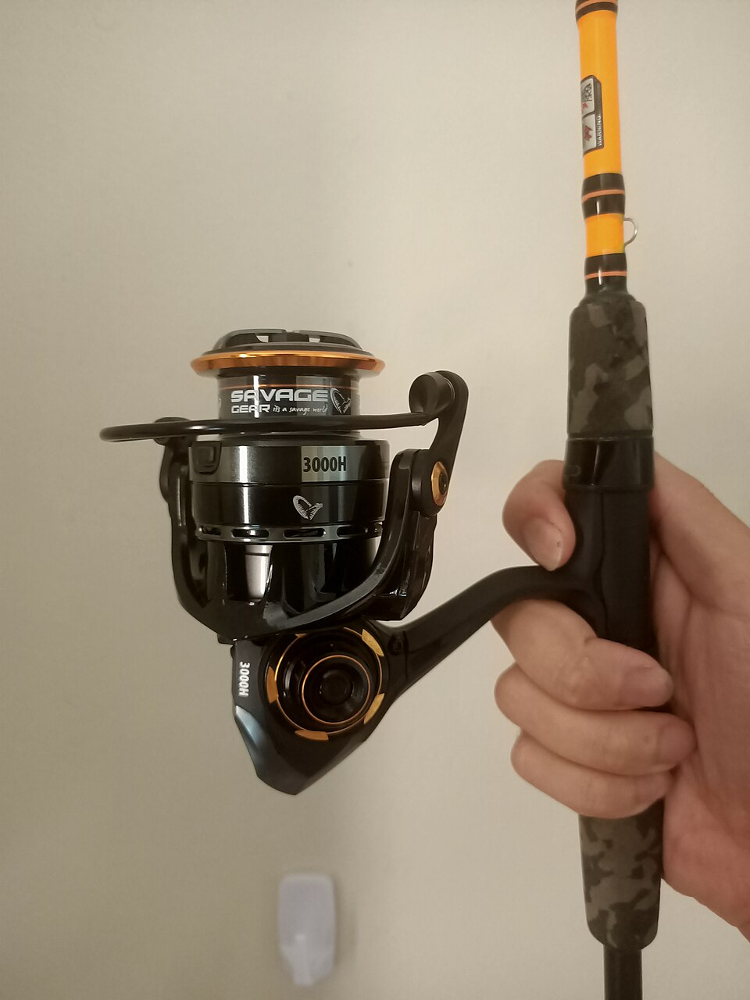
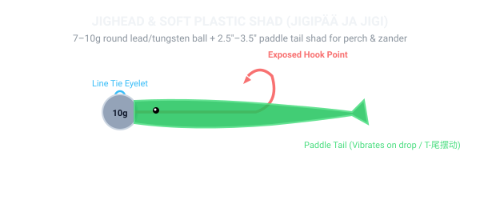
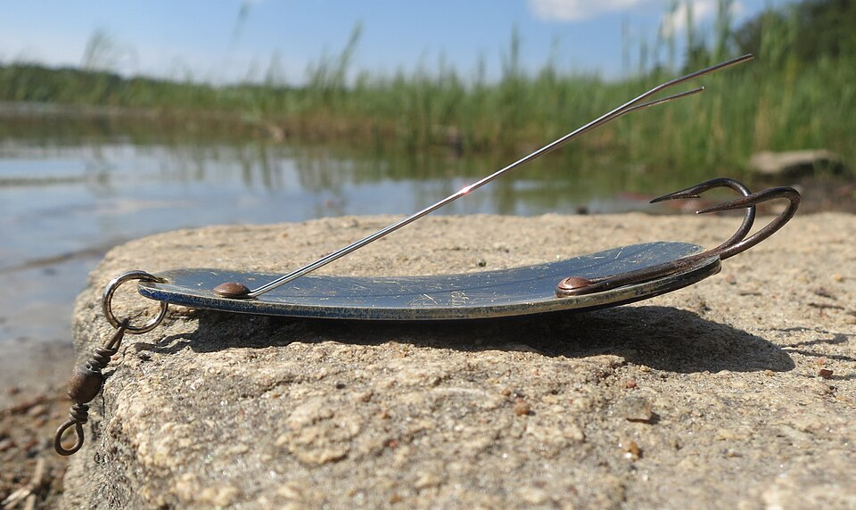
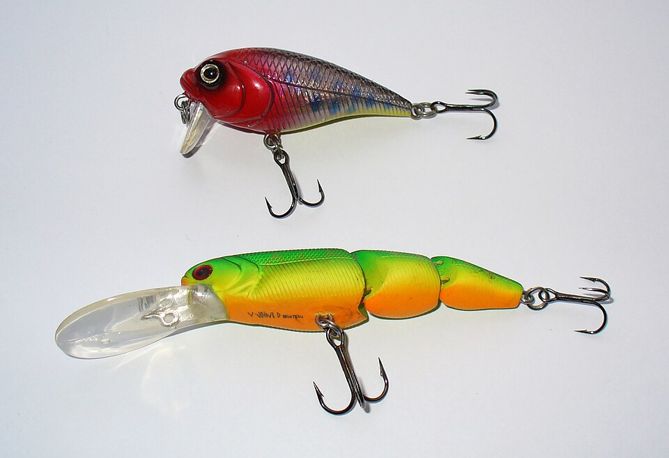
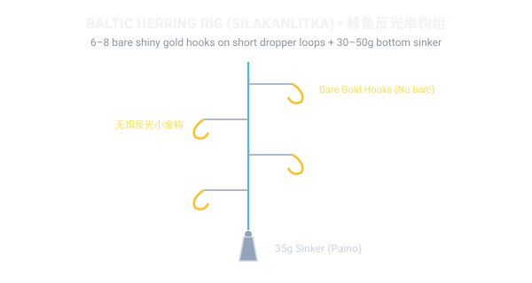
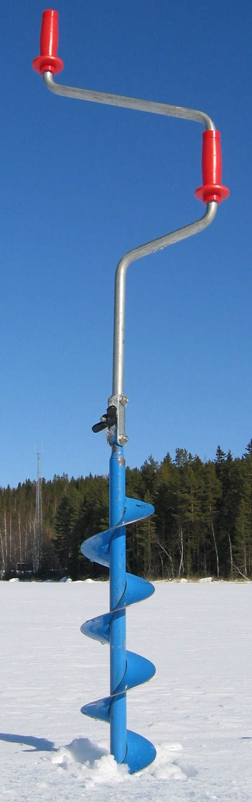
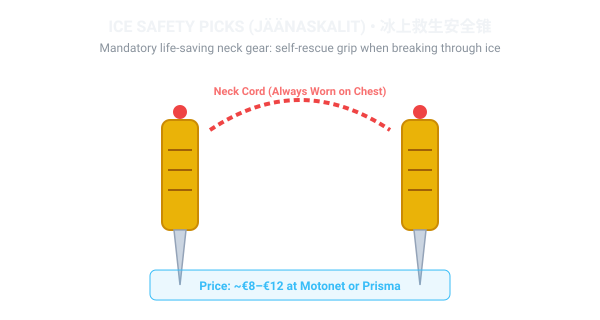
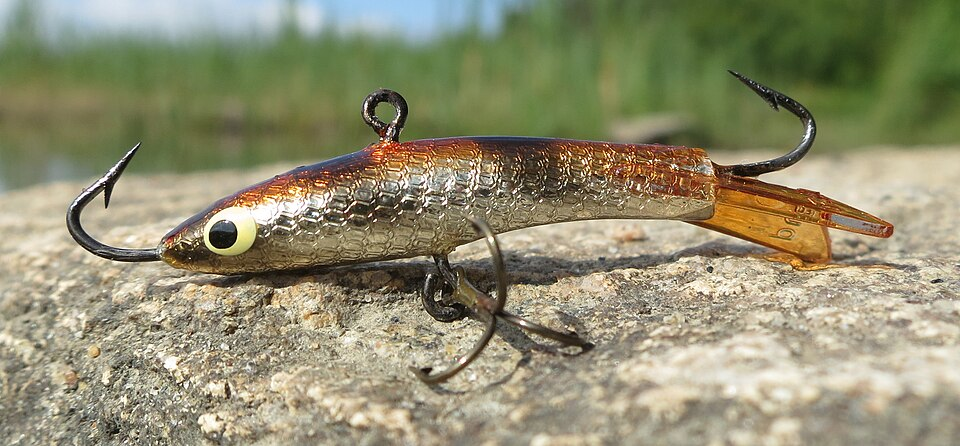
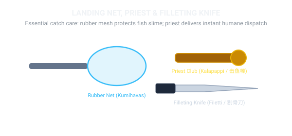

🧰 Visual Equipment Guide: Gear & Tackle Decoded
To ensure you know exactly what gear to look for in Finnish tackle stores (like Motonet, Ruoto, or Prisma), browse the visual equipment gallery below with exact Finnish names and functions:

Avokelasetti (Spinning Combo)
7ft (210cm) Rod + 2500 Spinning Reel
Summer All-Round
€70–€110
The universal Finnish starter setup. Medium-Light rod (cast weight 7–25g) with a front-drag 2500 reel. Spooled with 0.12–0.14mm 8-strand braid and a 0.35mm fluorocarbon leader.

Jigipäät ja Jigit (Jigs & Softbaits)
Round Lead/Tungsten Heads (7g–15g) + 2.5"–3.5" Shads
Perch & Zander #1
€12 starter pack
Silicone paddle tail shads mounted onto single hooks with round weights. The tail flutters energetically on the fall, triggering reflexive predator strikes.

Lusikkauistin (Casting Spoon)
Kuusamo Professor / Räsänen Style (15g–25g)
Pike & Trout
€8–€12
Curved brass spoon stamped in Finland. Flutters with an erratic wobbling action on slow retrieve and sinks with a backward glide when paused. Copper/silver is the top color.

Vaappu (Balsa / Plastic Wobbler)
Rapala Original / Countdown (7cm–11cm)
Perch, Zander & Pike
€10–€14
Floating or sinking minnow lure with a plastic diving lip. Produces the legendary 'wounded minnow' wobble invented by Lauri Rapala on Lake Päijänne.

Silakanlitka (Herring Sabiki Rig)
6–8 Shiny Gold Hooks + 35g Sinker
100% Free General Right
€2–€3 at Motonet
Unbaited multi-hook string jigged vertically from bridges in May–June. Catches full strings of Baltic herring without any live bait.

Jääkaira (Hand Ice Auger)
130mm (5") or 150mm (6") Spiral Hand Auger
Winter Essential
€45–€75
Razor-sharp curved steel blades that drill through 30 cm of hard lake ice in 20 seconds. 130mm is the universal size for perch; 150mm for larger pike and zander.

Jäänaskalit (Ice Safety Picks)
Twin Hardened Steel Spikes with Neck Cord
MANDATORY SAFETY
€8–€12
Always worn around the neck outside your winter coat. If you fall through thin ice, you grip a pick in each hand and stab the ice to pull yourself out safely.

Pilkkivapa & Tasuri (Ice Rod & Balance Jig)
Compact Winter Rod + Horizontal Finnish Lure
Winter Fishing
€15–€25 kit
Short, sensitive ice rod. When jigged, the horizontal balance jig (*tasapainopilkki*) darts in wide figure-8 circles beneath the ice hole to entice large winter perch.

Havashaavi, Pappi & Filetti
Rubber Mesh Net, Stunning Priest & Filleting Knife
Fish Welfare
€25–€40 total
Rubber netting protects fish mucus membrane during catch and release. The wooden priest delivers an instant humane blow (*pappaus*) for dinner fish.
🪢 Essential Knots: The Double Uni Knot Tutorial
You only need to master two knots to fish successfully in Finland: connecting zero-stretch braided mainline to fluorocarbon leader (Double Uni Knot), and tying your terminal snap swivel (Palomar Knot).